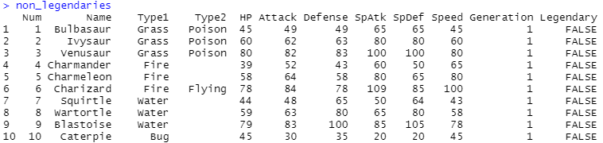

Data Exploration of Pokemon [R]
A data exploration of non-Mega Evolution, non-legendary, Generation 1-6 Pokemon using R. Pokemon are split into similar type groups and central tendency calculations are done across each stat using user-defined functions, along with visualizations of type groups against various stats.
LANGUAGE USED: R
SKILLS USED: #DataWrangling, #R User-Defined Functions, #R For Loop, #Central Tendency & Dispersion, #Visualization
MAIN FUNCTIONS USED: readxl::read.csv(), tidyverse::filter(), grepl(), split(), for loop, tidyverse::map(), ggplot2::ggplot(), ggplot2::geom_*()
PART 1: DATA SOURCE
The data is from Michael Lomuscio's Kaggle dataset. It contains an Excel worksheet of Pokemon from Generations 1 through 6, including their types, stats, generations, and legendary designations. It includes Mega Evolutions (including the Primal Forms for Kyogre and Groudon) and different Forms as their own separate entries.
{kind=link}
PART 2: DATA WRANGLING
The Excel dataset is imported into R using the readxl package.
library(readxl) pokemon = read.csv(file="PokemonData.csv", header=TRUE, stringsAsFactors=TRUE) head(pokemon)
{kind=link}
For this exploration, only non-Mega Evolution and non-legendary Pokemon will be looked at. Mega Evolutions and Legendaries are vastly more powerful than the rest of the normal Pokemon and would act like outliers, skewing the data.
Mega Evolutions:
Two new variables are created to differentiate between Mega Evolutions or not. Since all Mega Evolutions in the data have the word "Mega" in their names followed by a space, grepl() is used to pattern match these observations. tidyverse::filter() is used to filter out Mega Evolutions—pulling out all Mega Evolutions in the first code, and all the non-Mega Evolutions in the second.
#Find Mega Evolutions: megas = pokemon %>% filter(grepl("Mega ", Name, ignore.case = TRUE)) megas
{kind=link}
#Find Non-Mega Evolutions: pokemon_nonmegas = pokemon %>% filter(!grepl("Mega ", Name, ignore.case = TRUE)) pokemon_nonmegas
{kind=link}
Legendaries:
Two new variables are created to differentiate between legendaries or not within the non-Mega Evolution group. tidyverse::filter() is used along with an equality test to see whether the Legendary column is TRUE or FALSE.
#Find legendaries: legendaries = pokemon_nonmegas %>% filter(Legendary == "TRUE") legendaries
{kind=link}
#Find non-legendaries: non_legendaries = pokemon_nonmegas %>% filter(Legendary == "FALSE") non_legendaries 
{kind=link}
Non-Mega Evolution, non-legendaries:
The non_legendaries variable contains all Generation 1-6 Pokemon that are not legendaries nor Mega Evolutions. To do analysis, these Pokemon will be grouped together by their Type1 designations (for simplicity's sake, this primary type will be viewed as the most representative of a Pokemon's typing). A new variable, non_legendaries_by_type, is created using split() and has the Pokemon grouped into each of the 18 types.
non_legendaries_by_type = non_legendaries %>% split(non_legendaries$Type1) non_legendaries_by_type
{kind=link}
To make creating user-defined functions easier, two other variables are created. The name_types variable is a character vector containing the names of each type (Bug, Dark, Dragon, etc.). The name_stats variable is a character vector containing the headers of the columns within each type (Num, Name, Type1, HP, etc.).
#character vector with names of each Type1 ($Bug, $Dark, etc): name_types = names(non_legendaries_by_type) name_types #character vector with headers within each Type1 ($Bug -> Num/Name/HP/etc): name_stats = colnames(non_legendaries_by_type[[1]]) name_stats
{kind=link}
{kind=link}
PART 3: User-Defined Functions
In this section, user-defined functions are created in order to easily find the mean and median of each stat of a specified Pokemon type.
Mean:
The mean_stats function takes a varying number of types parameters (allowing the user to easily specify certain types they want to look at or by passing the name_types variable to run the function for every type), and the data source parameter. The For Loop states that for all types specified in the function, return the mean of each stat. Within the For Loop for each stat being calculated, first, the names within the types variable get iterated (for example, if types=c("Bug", "Dark"), data[types[i]] would be equivalent to non_legendaries_by_type["Bug"] = Bug, then iterates to "Dark" next). Then, tidyverse::map() is used to map the name of each stat (for example, name_stats[5] = HP since it is the 5th element within name_stats [alternatively: the stat name could be hardcoded and written as simply map("HP"), but is less flexible]) to the mean. The mean is calculated for each of the 6 stats for each type the user specifies when running the function. The result is stored in a matrix of 6 rows for each stat, and however many columns as the number of arguments passed in the types variable. Rows are named as the stats and columns are named as the types.
mean_stats = function(..., data){ types = c(...) result = matrix(vector("double", 6*length(types)), nrow=6) for(i in seq_along(types)){ result[,i] = c( HP = data[types[i]] %>% map(name_stats[5]) %>% map_dbl(mean, na.rm=T), Attack = data[types[i]] %>% map(name_stats[6]) %>% map_dbl(mean, na.rm=T), Defense = data[types[i]] %>% map(name_stats[7]) %>% map_dbl(mean, na.rm=T), SpAtk = data[types[i]] %>% map(name_stats[8]) %>% map_dbl(mean, na.rm=T), SpDef = data[types[i]] %>% map(name_stats[9]) %>% map_dbl(mean, na.rm=T), Speed = data[types[i]] %>% map(name_stats[10]) %>% map_dbl(mean, na.rm=T) ) } rownames(result) = name_stats[5:10] colnames(result) = types result } mean_stats(name_types, data=non_legendaries_by_type)
{kind=link}
This information can be used to compare mean stats within a type, or across multiple types. For example, the maximum and minimum mean stats of a Bug type Pokemon can be found using max and min.
#find max mean stat of Bug: max(mean_stats(name_types, data=non_legendaries_by_type)[,1]) #find min mean stat of Bug: min(mean_stats(name_types, data=non_legendaries_by_type)[,1])
{kind=link}
{kind=link}
For Bug type Pokemon, Special Attack is their lowest average stat and Defense is their highest average stat.
Median:
A similar function, median_stats, is created calculating the median of each of the 6 stats for each type passed. The median is not influenced by outliers the way the mean is.
median_stats = function(..., data){ types = c(...) result = matrix(vector("double", 6*length(types)), nrow=6) for(i in seq_along(types)){ result[,i] = c( HP = data[types[i]] %>% map(name_stats[5]) %>% map_dbl(median, na.rm=T), Attack = data[types[i]] %>% map(name_stats[6]) %>% map_dbl(median, na.rm=T), Defense = data[types[i]] %>% map(name_stats[7]) %>% map_dbl(median, na.rm=T), SpAtk = data[types[i]] %>% map(name_stats[8]) %>% map_dbl(median, na.rm=T), SpDef = data[types[i]] %>% map(name_stats[9]) %>% map_dbl(median, na.rm=T), Speed = data[types[i]] %>% map(name_stats[10]) %>% map_dbl(median, na.rm=T) ) } rownames(result) = name_stats[5:10] colnames(result) = types result } median_stats(name_types, data=non_legendaries_by_type)
{kind=link}
PART 4: VISUALIZATION
In this section, various types of plots are created using ggplot2.
1. Bar Plot - Number of Non-Mega, Non-Legendary Pokemon Per Main Type (Continuous vs Categorical Variables):
The data is made into a bar plot using ggplot2::ggplot() and geom_bar(). Each bar represents a single Type1 type and has a color fill specified by scale_color_manual(). coord_flip() is used to flip the axes for better readability—Type1 is on the y-axis and Count is on x-axis. A label with the count is added to the side of each bar using geom_text(). Plot title is created using labs(). Gaps between the y-axis and bars are removed, and the limits for the y-axis are established using scale_y_continuous. The legend's order is reversed so that it matches with the order of the y-axis using guides(). The theme of the plot is set to a built-in ggplot2 theme with theme_minimal(). Details of the theme are edited using theme(): plot title is centered, bolded, and size-adjusted; grid lines are removed or changed color; axis lines' colors and sizes are changed; the legend's title is centered and a box around it is created. Each bar represents the count of non-Mega, non-legendary Pokemon with a specific Type1 type.
ggplot(non_legendaries, aes(Type1, fill = Type1)) + geom_bar() + scale_fill_manual(values = c( Bug = "khaki3", Dark = "mediumpurple4", Dragon = "dodgerblue4", Electric = "goldenrod3", Fairy = "lightpink1", Fighting = "sienna2", Fire = "indianred3", Flying = "skyblue", Ghost = "grey43", Grass = "paleturquoise4", Ground = "rosybrown4", Ice = "lightsteelblue1", Normal = "mistyrose2", Poison = "plum4", Psychic = "hotpink3", Rock = "mistyrose4", Steel = "slategray3", Water = "steelblue3" ) ) + coord_flip() + geom_text(stat = "count", aes(label = after_stat(count)), hjust = -0.25) + labs(title="Number of Non-Legendary Pokemon Per Main Type") + scale_y_continuous("Count", expand = c(0,0), limits = c(0, 110)) + guides(fill = guide_legend(reverse = TRUE)) + theme_minimal() + theme( plot.title = element_text(hjust = 0.5, face = "bold", size = 15), panel.grid.major.y = element_blank(), panel.grid.major.x = element_line(color = "gray80"), axis.line = element_line(color = "gray80", size = 1), legend.title.align = 0.5, legend.background = element_rect(color = "gray80", size = 1) )
{kind=link}
Water is the most common main type a Pokemon can be, with 103 Pokemon being Water type. Flying is the least common main type, with only 2 Pokemon.
2. Bar Plot - Number of Non-Mega, Non-Legendary Pokemon Per Secondary Type (Continuous vs Categorical Variables):
The previous code is duplicated and Type1 is swapped out for Type2 instead. Pokemon that do not have a second type are ignored when building the plot—as we are not interested in comparing whether or not a Pokemon has a secondary type and, instead, are just concerned about looking at those that do have one, this is not an issue.
{kind=link}
Despite having the lowest primary type count, Flying is the most common secondary type, with 79 Pokemon. Bug is the lowest, with only 3 Pokemon.
3. Box Plot - Attack Stats of Non-Mega, Non-Legendary Pokemon Per Main Type (Continuous vs Categorical Variables):
A box plot is created using ggplot2::ggplot() and geom_boxplot(). Each box represents one Type1 type, filled with a color given using scale_color_manual(). Plot title is added using labs() and theme is altered using theme_minimal() and theme(). The Attack stat of each Type1 type is plotted—giving a representation of the five-number summary and outliers.
ggplot(non_legendaries, aes(Type1, Attack, fill = Type1)) + geom_boxplot() + scale_fill_manual(values = c( Bug = "khaki3", Dark = "mediumpurple4", Dragon = "dodgerblue4", Electric = "goldenrod3", Fairy = "lightpink1", Fighting = "sienna2", Fire = "indianred3", Flying = "skyblue", Ghost = "grey43", Grass = "paleturquoise4", Ground = "rosybrown4", Ice = "lightsteelblue1", Normal = "mistyrose2", Poison = "plum4", Psychic = "hotpink3", Rock = "mistyrose4", Steel = "slategray3", Water = "steelblue3" ) ) + labs(title="Attack Stats of Non-Legendary Pokemon Per Main Type") + theme_minimal() + theme( plot.title = element_text(hjust = 0.5, face = "bold", size = 15), axis.line = element_line(color = "gray80", size = 1), legend.title.align = 0.5, legend.background = element_rect(color = "gray80", size = 1) )
{kind=link}
Fighting types have the highest median Attack stats, while Psychic types have the lowest.
4. Stacked Bar Plot - Number of Non-Mega, Non-Legendary Pokemon Per Main Type By Generation (Categorical vs Categorical Variables):
A stacked bar plot is created using ggplot2::ggplot() and geom_bar(), with Type1 as ggplot()'s aes() parameter and Generation as geom_bar()'s aes() parameter. Each bar represents a Generation and are comprised of stacked bars that display all the Type1 types within the Generation. Each Type1 has a color fill specified by scale_color_manual(). coord_flip() is used to flip the axes for better readability—Generation is on the y-axis and Count is on x-axis. Similar to the previous plots, a plot title is added using labs(), a legend is created and legend order is flipped using guides(), axes are customized using scale_x_continuous and scale_y_continuous, and theme is adjusted using theme_minimal() and theme().
ggplot(non_legendaries, aes(Type1, fill = Type1)) + geom_bar(aes(Generation)) + scale_fill_manual(values = c( Bug = "khaki3", Dark = "mediumpurple4", Dragon = "dodgerblue4", Electric = "goldenrod3", Fairy = "lightpink1", Fighting = "sienna2", Fire = "indianred3", Flying = "skyblue", Ghost = "grey43", Grass = "paleturquoise4", Ground = "rosybrown4", Ice = "lightsteelblue1", Normal = "mistyrose2", Poison = "plum4", Psychic = "hotpink3", Rock = "mistyrose4", Steel = "slategray3", Water = "steelblue3" ) ) + coord_flip() + labs(title="Number of Non-Legendary Pokemon Per Main Type By Generation") + scale_y_continuous("Count", expand = c(0,0), limits = c(0, 155)) + scale_x_continuous("Generation", breaks = seq(1, 6, by = 1)) + theme_minimal() + theme( plot.title = element_text(hjust = 0.5, face = "bold", size = 13), panel.grid.major.y = element_blank(), panel.grid.major.x = element_line(color = "gray80"), axis.line = element_line(color = "gray80", size = 1), legend.title.align = 0.5, legend.background = element_rect(color = "gray80", size = 1) )
{kind=link}
This type of plot is useful in displaying the distribution of the main types within each Generation. Water and Normal types tend to comprise a big portion of Pokemon introduced in a Generation.
5. Scatterplot - Attack Stats vs Defense Stats of Non-Mega, Non-Legendary Pokemon Per Main Type (Continuous vs Continuous Variables):
A scatterplot is created using ggplot2::ggplot() and geom_point(), with Attack and Denfense as ggplot()'s aes() parameters and Type1 as geom_point()'s aes() parameter. Once again, the colors denoting Type1 are picked using scale_color_manual(). A plot title is added using labs() and the theme is adjusted using theme_minimal() and theme(). A regression line is added using geom_smooth(method = "lm").
ggplot(non_legendaries, aes(Attack, Defense)) + geom_point(aes(color = Type1)) + scale_fill_manual(values = c( Bug = "khaki3", Dark = "mediumpurple4", Dragon = "dodgerblue4", Electric = "goldenrod3", Fairy = "lightpink1", Fighting = "sienna2", Fire = "indianred3", Flying = "skyblue", Ghost = "grey43", Grass = "paleturquoise4", Ground = "rosybrown4", Ice = "lightsteelblue1", Normal = "mistyrose2", Poison = "plum4", Psychic = "hotpink3", Rock = "mistyrose4", Steel = "slategray3", Water = "steelblue3" ) ) + geom_smooth(method = "lm") + labs(title="Attack vs. Defense Stats of Non-Legendary Pokemon Per Main Type") + theme_minimal() + theme( plot.title = element_text(hjust = 0.5, face = "bold", size = 15), axis.line = element_line(color = "gray80", size = 1), legend.title.align = 0.5, legend.background = element_rect(color = "gray80", size = 1) )
{kind=link}
Attack and Defense tend to have a slight positive linear relationship, as the line of best fit shows—as the Attack stat increases, the Pokemon tends to also have a higher Defense stat. However, the data is not tightly clustered along the line and does not seem to have a clear linear path, visually, so the correlation does not seem to be that strong. Additional correlation testing must be done to determine the actual relationship between the two.
6. Histogram - Distribution of Attack Stats of Non-Mega, Non-Legendary Pokemon Per Main Type by Generation (Continuous Variable, Multiple Plots):
A histogram is created using ggplot2::ggplot() and geom_histogram(). Each bar represents the number of Pokemon that have an Attack stat within a certain bin size—each color coded according to which Type1 type they are, using scale_color_manual() to pick the colors. Multiple histograms—one for each Generation—are compiled together into one graph using facet_wrap() for easier comparision. labs() establishes the plot title and theme() customizes the theme's look.
ggplot(non_legendaries, aes(Attack, fill = Type1)) + geom_histogram() + scale_fill_manual(values = c( Bug = "khaki3", Dark = "mediumpurple4", Dragon = "dodgerblue4", Electric = "goldenrod3", Fairy = "lightpink1", Fighting = "sienna2", Fire = "indianred3", Flying = "skyblue", Ghost = "grey43", Grass = "paleturquoise4", Ground = "rosybrown4", Ice = "lightsteelblue1", Normal = "mistyrose2", Poison = "plum4", Psychic = "hotpink3", Rock = "mistyrose4", Steel = "slategray3", Water = "steelblue3" ) ) + labs(title="Distribution of Attack Stats of Non-Legendary Pokemon Per Main Type by Generation") + theme( plot.title = element_text(hjust = 0.5, face = "bold", size = 15), axis.line = element_line(color = "gray80", size = 1), legend.title.align = 0.5, legend.background = element_rect(color = "gray80", size = 1) )
{kind=link}
In general, the Generations tend to follow a normal distribution—the Attack stat of the most Pokemon is usually in the middle ranges and less Pokemon have an Attack in the extremes. Bin size can be adjusted in the future to get more granular and helpful insights.